Learning Objectives
After completing this lesson, you'll be able to:
- Create and export FME Flow Projects.
- Understand item dependencies.
- Understand the implications of system encryption alongside Projects.
Resources
- Starting project | C:\FMEData\Workspaces\DeployWorkflowsWithFMEFlow\deploy-workflows-with-fme-flow--starting-project.fsproject
Share Content Through Projects
Projects group FME Flow items that share a common solution, or 'project', in your organization. Projects let you reference all items in a workflow in one easy place and can include just about any FME Flow item.
The main advantage of using projects is that they allow you to transfer content between FME Flow instances easily. This transfer is essential when migrating through various stages of development (from development, testing, to production servers).
Projects also allow you to share multiple items simultaneously. Compiling a project will enable you to package up all the required workspaces, repositories, files, and other components in a single .fsproject file. You can share the project file with other users within a Flow instance or export and import it into other Flow instances.

Encryption was introduced to FME Flow in 2023.1 and is something to be aware of when importing and exporting projects between different FME Flow instances. The default encryption mode setting is “Standard,” which applies a custom encryption key specific to your FME Flow installation.
If you are using a Safe Software-provided machine for the Flow Authoring course the Flow Instance will be set to "Weak." For more information please see our System Encryption Documentation.
Creating the Project
From the side menu, you can click Projects to go to the Manage Projects screen. To open a dialogue for a new project, click Create Project in the menu or the blue Create button on the Projects page. First, you need to give your project a name and description.
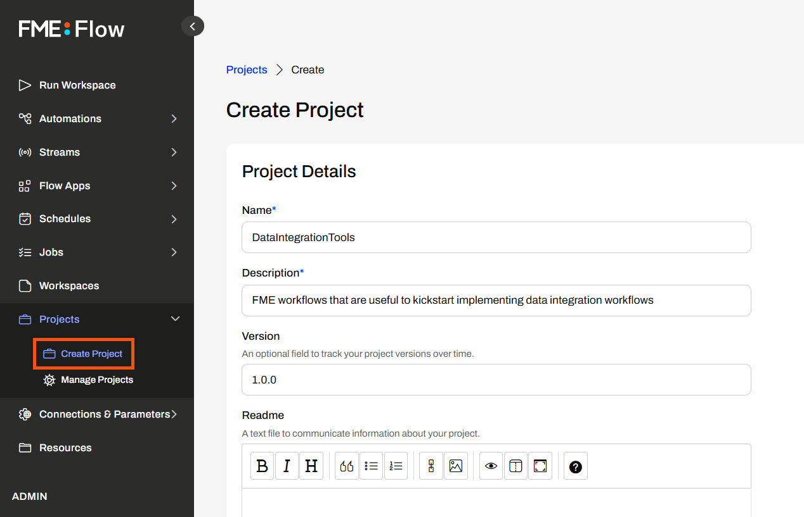
To add content, you must use the Add Items dialog, where you select the Item Type and then add individual items to the project.


Once you add an item, FME Flow lists it and its dependencies under Selected Items on the right side.
You can only include some items, such as tokens and workspace apps, if you are the owner. You can set permissions for other roles accordingly to allow access to items you do not own. For more information, please see Getting Started with FME Flow Projects.
After you create your project, FME Flow displays all details about it and the items you added to it.

Dependencies
When you add items that require additional FME Flow items to function, FME Flow automatically includes those items in your project as dependencies. Dependencies may consist of web or database connections to run a workspace, or workspaces that are part of an Automation, or any other item necessary to run the workflow.
When you add an item with dependencies, FME Flow lists them in the expandable section of Selected Items for that item.
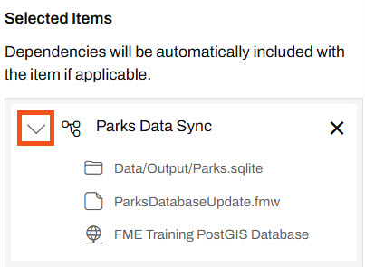
This Parks Data Sync Automation has three dependencies: a Resources file, a workspace, and a database connection.
Once you create the project, you may see the dependencies for an item from the Actions options.
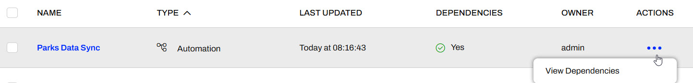
FME Flow automatically includes dependencies in your project; however, you can exclude certain sensitive items like connections and tokens upon exporting the project. Additionally, users may choose to exclude sensitive dependencies when importing the project.
Exporting Projects
To export a project, navigate to Projects > Manage Projects. Select the project you want to export and then click Export.
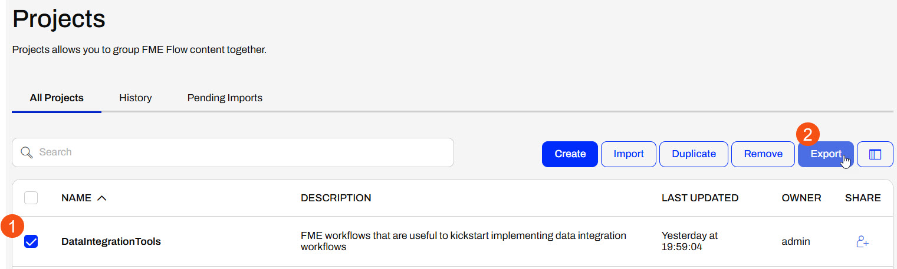
The Export Project page asks you to choose a project file name, set the project export location, and configure Security Settings.

Under Security Settings, you have the option to include Sensitive Data. Sensitive Data includes users, tokens, connections, and anything else that may be sensitive to share from a security perspective. If you wish to include Sensitive Data, FME Flow will encrypt the project file, and you will need the encryption key to import the project to another FME Flow.
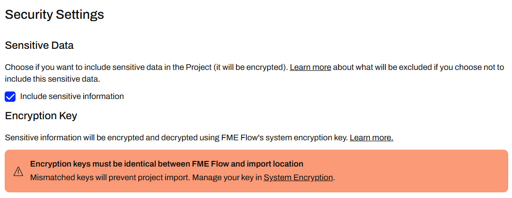
Security Settings are important to consider on your own FME Flow, and you should be aware of encryption requirements. Default encryption was introduced in FME Flow 2023.1 and in order to import projects containing sensitive information, the encryption key needs to match or be imported to FME Flow ahead of importing the project. If you are using a Safe Software-provided machine, the encryption is set to weak. For more information on this, please see our documentation on Encryption.
Once you click Export, your project will download or save in Resources.
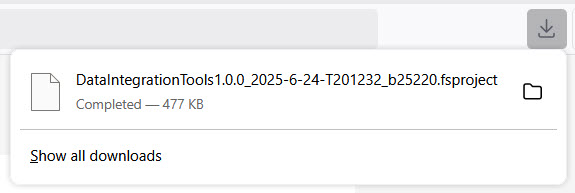
You can share the .fsproject file with others or import it into another FME Flow instance. For example, you should use projects when migrating content between your organization's development and production FME Flow instances.
Exercise

Frank and his colleagues have successfully deployed some FME workflows on FME Flow. A neighboring municipality is also deploying FME Flow, and they've asked Frank to share some of their workflows for inspiration. To do this, Frank will prepare an FME Flow Project containing some of their workflows and then export it to share with the municipality.
Follow along with Frank's steps as he creates and exports an FME Flow Project.
If you're taking a live Safe Software-hosted training course or using an on-demand lab for this course, the content required for this lesson has already been imported into your FME Flow.
If you're completing this lesson with your own FME Flow, you must import the starting project with the content into your FME Flow. If you don't want to import this project on your own FME Flow, you can just read along.
Expand for Steps to Import the Starting Project
3) Navigate to your FME Flow and open Projects. Click Import.
4) Upload deploy-workflows-with-fme-flow--starting-project.fsproject as the Project File and then click Import.
5) The first step is Preview Content, where you may choose not to overwrite existing items. If all your items are New Items, you don't need to worry about overwriting existing items. Click Continue.
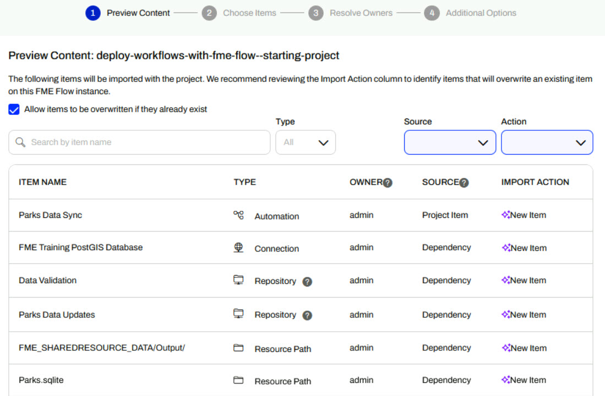
6) The next step is to select connections and tokens to import. By default, FME Flow does not select them for import. Select both the FME Training PostGIS Database Connection and the Workspace App - Data Validation Token to import. If you do not import these, the workflows will not run successfully. Click Continue.
7) The Resolve Owners step only allows you to reassign the project contents to a different user if the admin user doesn't exist on your FME Flow. Click Continue and then click Import Project from the Additional Options step. The project will import and display its import status from the same page.
If the project import failed, check that you uploaded the encryption key and repeat the process. If it still fails, contact us at train@safe.com.
1) Create a Project
On the FME Flow side menu, Frank selects Projects > Create Project. He gives the project a name and description.
He scrolls down and selects Add Items.
2) Add Items to Project
Under Item Type, Frank selects Automation, and FME Flow displays the Automations on his FME Flow. He clicks the + icon to add the Parks Data Sync Automation to the Project.
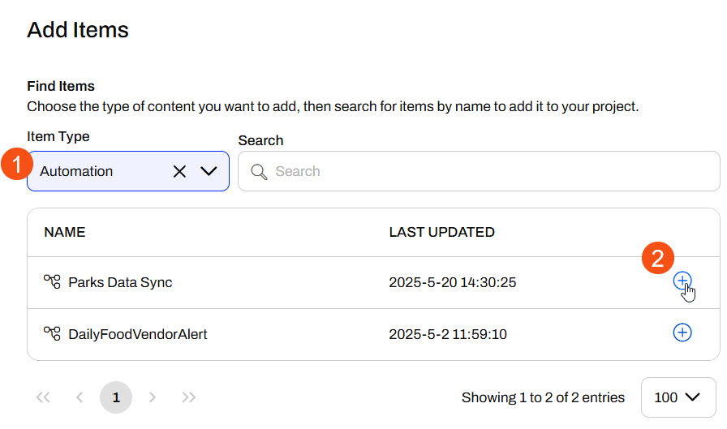
FME Flow adds the Automation to the project on the right side under Selected Items, and Frank expands it to see its dependencies.
Next, Frank changes the Item Type to Workspace and selects the Data Validation Repository. He adds the CAD_Data_Validation.fmw workspace to the project. This workspace doesn't contain any dependencies, so FME Flow only adds the workspace to the Selected Items.
Optional: If you completed the previous lesson, Share Workspaces as Apps, add Jennifer's community-data-download Workspace App to the Project.
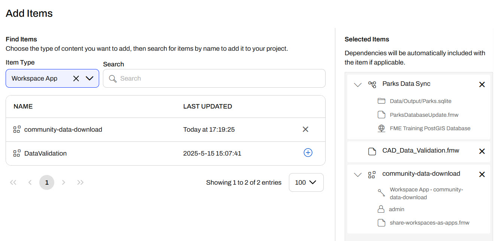
Frank clicks Add Items to finish and close the Add Items window. FME Flow lists the items under Project Contents.
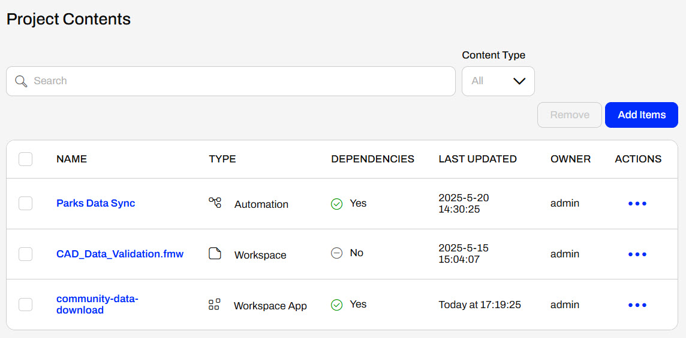
Frank scrolls to the bottom and clicks Create. FME Flow displays an overview of the project.
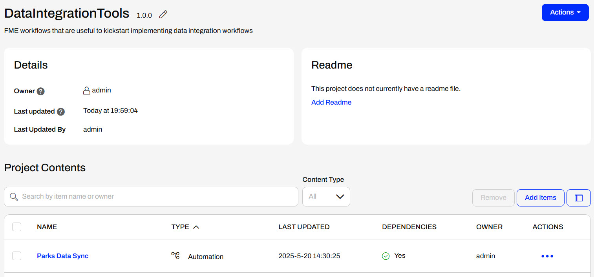
3) Export Project
Frank expands Actions and selects Export, which opens the Export Project page.

Under Export Details, Frank doesn't change any settings.
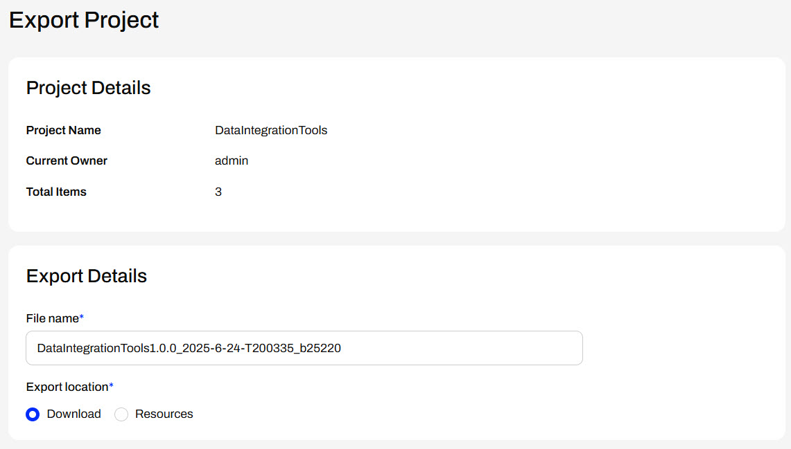
However, under Security Settings, Frank deselects the option to Include sensitive information. He shouldn't share any sensitive or confidential information with the neighboring municipality.
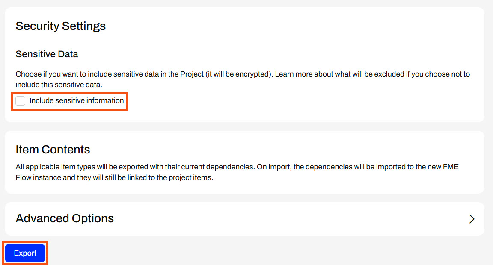
Frank doesn't need to alter other settings, so he clicks Export. Frank's project immediately downloads as an .fsproject file, which he can share with the neighboring municipality to import into their FME Flow.